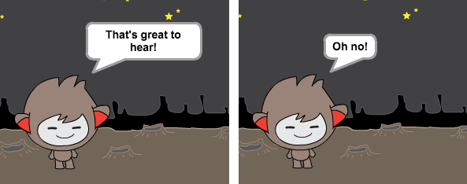
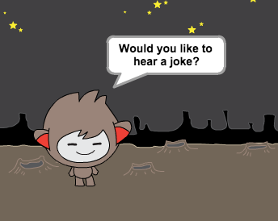
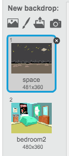

Before you start making your chatbot, you need to decide on their personality.
What is their name?
Where do they live?
Are they happy? serious? funny? shy? friendly?
Start a new Scratch project, and delete the cat sprite so that your project is empty. You can find the online Scratch editor at jumpto.cc/scratch-new.
Choose one of these character sprites, and add them to your project:
screenshot
Choose a backdrop that fits your chatbot’s personality. Here’s an example, although yours doesn’t have to look like this:
screenshot
Save your project
Step 2: A talking chatbot
Now that you have a chatbot with a personality, let’s program it to talk to us.
Activity Checklist
Click on your chatbot character, and add this code:
when this sprite clicked
ask [Hey! What's your name?] and wait
say [What a lovely name!] for (2) secs
Click your chatbot to test it out. After you are asked your name, type it into the box along the bottom of the stage, and click the tick (or press return).
screenshot
Your chatbot simply replies “What a lovely name!” every time. You can personalise your chatbot’s reply, by making use of the user’s answer. Change the chatbot’s code, so that it looks like this:
when this sprite clicked
ask [Hey! What's your name?] and wait
say <join [Hi] (answer)> for (2) secs
To create the last block, you’ll need to first drag on a green join block, and drag it on to the say block.
screenshot
You can then change the text “hello” to say “Hi”, and drag the light blue answer block (from the ‘Sensing’ section) onto the text “world”.
screenshot
Test out this new program. Does it work as you expected? Can you fix any problems that you can see? (Hint: you can try adding in a space somewhere!)
It may be that you want to store the user’s name in a variable, so that you can use it again later. Create a new variable called ‘name’. If you’ve forgotten how to do this, the previous ‘Balloons’ project will help you.
Once you’ve created your new variable, make sure that your chatbot’s code looks like this:
when this sprite clicked
ask [Hey! What's your name?] and wait
set [name v] to (answer)
say <join [Hi ] (name)> for (2) secs
If you test your program again, you’ll notice that the answer is stored in the ‘name’ variable, and is shown in the top-left of the stage.
screenshot
If you’d rather not see the variable on your stage, you can click the tick next to the variable name in the ‘Scripts’ tab to hide it.
Save your project
Challenge: More questions
Program your chatbot to ask another question. Can you store their answer in a variable?
screenshot
Save your project
Step 3: Making decisions
You can program your chatbot to decide what to do, based on the user’s responses.
Activity Checklist
Let’s get your chatbot to ask the user a question which has a ‘yes’ or ‘no’ answer. Here’s an example, but you can change the question if you like:
when this sprite clicked
ask [Hey! What's your name?] and wait
set [name v] to (answer)
say <join [Hi ] (name)> for (2) secs
ask <join [Are you OK ] (name)> and wait
if ((answer)=[yes]) then
say [That's great to hear!] for (2) secs
end
Notice that now you’ve stored the user’s name in a variable, you can use it as much as you like.
To test this program properly, you’ll need to test it twice - once typing ‘no’ as your answer, and once typing ‘yes’. You should only get a response from your chatbot if you answer ‘yes’.
The trouble with your chatbot is that it doesn’t give a reply if the user answers ‘no’. You can fix this, by changing the if block to an if/else block, so that your code now looks like this:
when this sprite clicked
ask [Hey! What's your name?] and wait
set [name v] to (answer)
say <join [Hi ] (name)> for (2) secs
ask <join [Are you OK ] (name)> and wait
if ((answer)=[yes]) then
say [That's great to hear!] for (2) secs
else
say [Oh no!] for (2) secs
end
If you test your code, you’ll now see that you get a response when you answer ‘yes’ or ‘no’. Your chatbot should reply with “That’s great to hear!” when you answer ‘yes’, but will reply with “Oh no!” if you type anything other than yes (else means ‘otherwise’).
screenshot
You can put any code inside an if or else block, not just code to make your chatbot speak. For example, you can change the chatbot’s costume to match the response.
If you have a look at your chatbot’s costumes, you may see that there is more than one. (If not, you can always add more yourself!)
screenshot
You can use these costumes as part of your chatbot’s response, by using this code:
when this sprite clicked
switch costume to [nano-a v]
ask [Hey! What's your name?] and wait
set [name v] to (answer)
say <join [Hi ] (name)> for (2) secs
ask <join [Are you OK ] (name)> and wait
if ((answer)=[yes]) then
switch costume to [nano-c v]
say [That's great to hear!] for (2) secs
else
switch costume to [nano-d v]
say [Oh no!] for (2) secs
end
Test out your program, and you should see your chatbot’s face change depending on the answer you give.
screenshot
Save your project
Challenge: More decisions
Program your chatbot to ask another question - something with a ‘yes’ or ‘no’ answer. Can you make your chatbot respond to the answer?
screenshot
Save your project
Step 4: Changing location
You can also program your chatbot to change its location.
Activity Checklist
Add another backdrop to your stage, and make sure that it has a useful name (for example ‘bedroom2’).
screenshot
You can now program your chatbot to change location, by adding this code to your chatbot:
ask [I'm going home, do you want to come with me?] and wait
if ((answer) = [yes]) then
switch backdrop to [bedroom2 v]
end
You also need to make sure that your chatbot is outside when you start talking to it. Add this block to the top of your chatbot code:
screenshot
Test your program, and answer ‘yes’ when asked if you want to go home. You should see that the chatbot’s location has changed.
screenshot
Does your chatbot change location if you type ‘no’? What about if you type ‘I’m not sure’?
Save your project
Challenge: Make your own chatbot
Use what you’ve learnt to finish creating your interactive chatbot. Here are some ideas:
screenshot
Once you’ve finished making your chatbot, get your friends to have a conversation with it! Do they like your character? Did they spot any problems?
Save your project
Hi there!
Seems like this is your first time here. Would you like a tour?